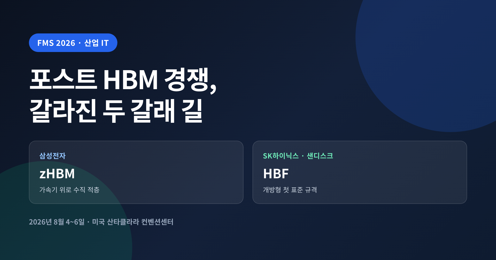
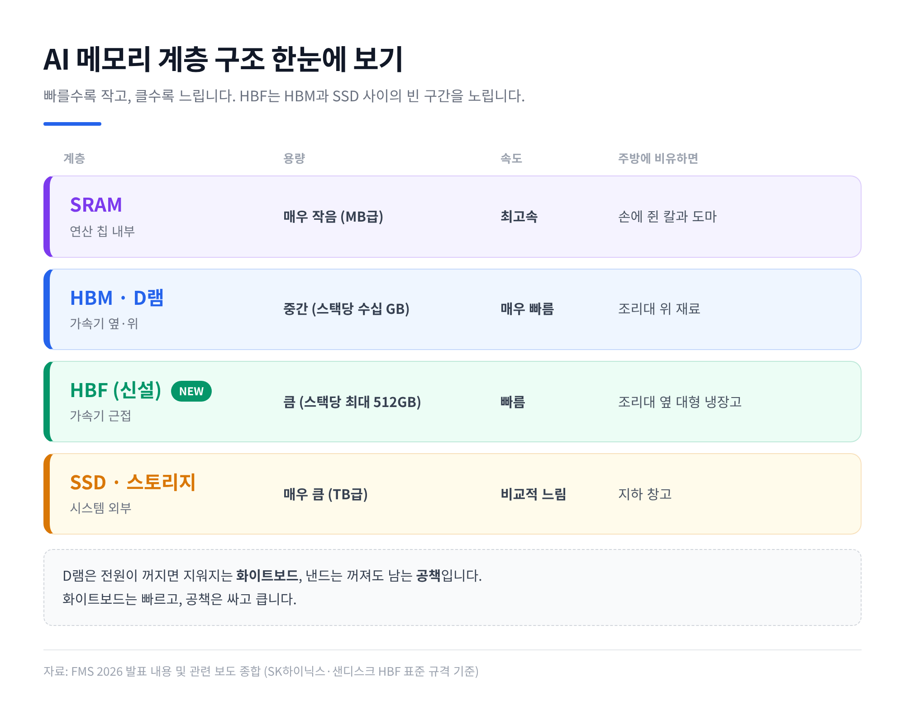
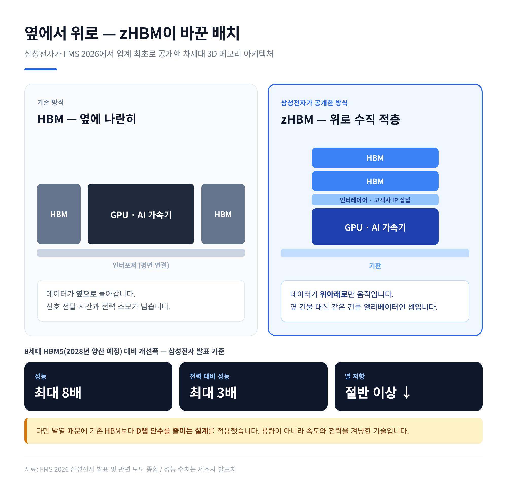
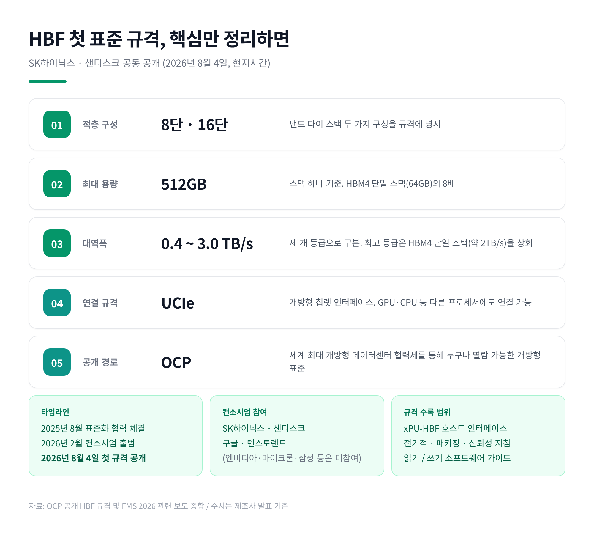
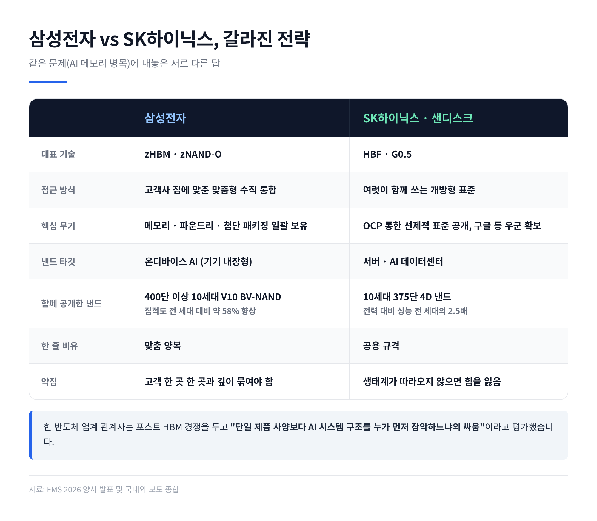
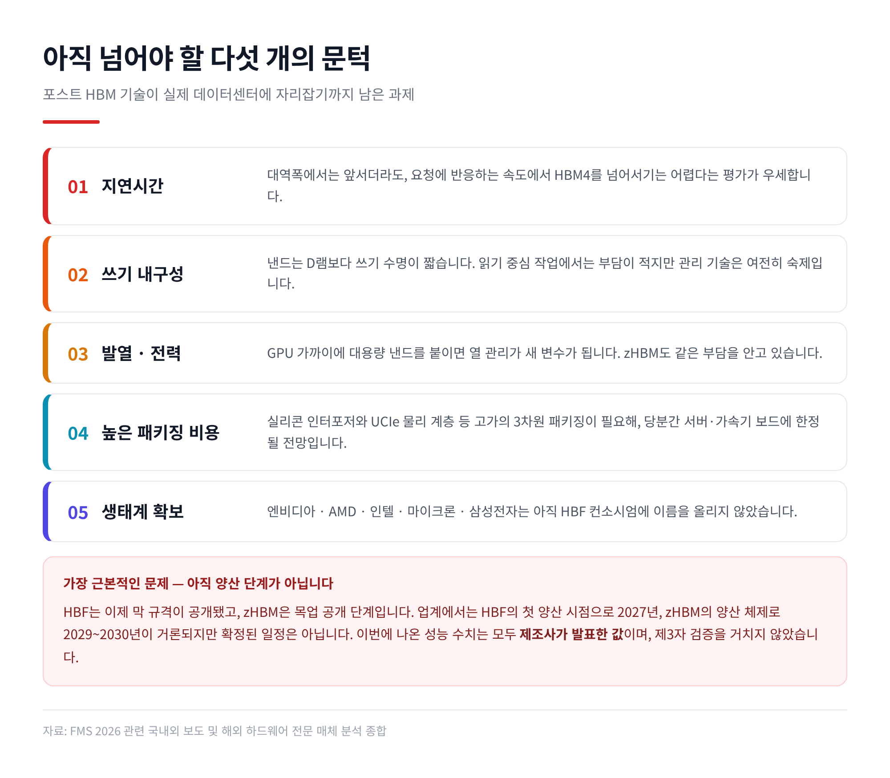

이번 글에서는 지난 8월 초 미국에서 열린 메모리 행사 FMS 2026을 정리해 보겠습니다. HBM 이후의 메모리를 두고 삼성전자와 SK하이닉스가 서로 다른 답을 같은 무대에 내놓았기 때문입니다. 용어가 낯설 수 있으니 기술 설명은 최대한 쉬운 비유와 함께 풀어보겠습니다.
세 줄 요약
FMS는 메모리와 스토리지 분야의 세계적인 학술·전시 행사입니다. 올해 행사는 현지시간 8월 4일부터 6일까지 사흘간 진행됐습니다.
행사장의 화두는 하나로 모였습니다. '메모리 장벽(Memory Wall)'입니다.
연산을 담당하는 두뇌가 아무리 빨라도, 재료가 제때 도착하지 않으면 요리는 늦어집니다. AI가 단순한 질의응답을 넘어 스스로 계획하고 실행하는 에이전트 단계로 넘어가면서, 데이터를 저장하고 옮기는 쪽이 발목을 잡기 시작한 것입니다.
삼성전자는 첫날 차세대 3D 메모리 아키텍처 zHBM의 목업을 업계 최초로 공개했습니다. 400단 이상을 쌓은 10세대 V낸드 'V10 BV-NAND'와, 낸드에 신경망처리장치(NPU)를 일체형으로 붙인 'zNAND-O'도 함께 내놓았습니다.
같은 날 SK하이닉스는 샌디스크와 공동으로 HBF(고대역폭 플래시)의 첫 표준 규격을 공개했습니다. 개방형 데이터센터 기술 협력체인 OCP를 통해서였습니다. 전시 부스에서는 개발 중인 10세대 375단 4D 낸드의 웨이퍼와 제품도 처음 선보였습니다.
기술의 지향점은 비슷했지만, 시장에 다가서는 방식은 정반대였습니다.

비전공자에게 가장 헷갈리는 대목이라 짚고 넘어가겠습니다.
컴퓨터의 기억장치는 하나가 아니라 여러 층으로 나뉩니다. 요리하는 주방에 빗대면 이해가 빠릅니다.
D램과 낸드의 차이도 간단합니다. D램은 전원이 꺼지면 내용이 사라지는 화이트보드, 낸드는 꺼져도 남는 공책입니다. 화이트보드는 빠르고, 공책은 싸고 큽니다.
문제는 조리대와 지하 창고 사이가 너무 멀다는 점입니다. AI 모델의 파라미터가 수천억에서 수조 개로 불어나면서 조리대만으로는 감당이 안 되는데, 그렇다고 매번 창고까지 뛰어갈 수도 없습니다.
바로 이 빈 구간이 이번 경쟁의 무대입니다.

기존 HBM은 GPU 같은 AI 가속기의 옆면에 나란히 붙습니다. 이미 상당한 속도를 냈지만, 신호가 오가는 데 걸리는 시간과 전력 소모라는 한계가 남아 있었습니다.
zHBM은 이 배치를 바꿉니다. 가속기 바로 위에 메모리를 수직으로 얹습니다. 데이터가 움직이는 거리를 사실상 0에 가깝게 줄이는 발상입니다.
기사에 등장한 비유가 적절합니다. 옆 건물까지 걸어가는 대신, 같은 건물 안 엘리베이터로 층만 오가는 셈입니다.
삼성전자가 밝힌 수치는 이렇습니다. 2028년 양산 예정인 8세대 HBM5와 비교해 성능은 최대 8배, 전력 대비 성능은 최대 3배, 열 저항은 절반 이상 낮아진다는 것입니다.
다만 솔직한 대목도 있습니다. 가속기 위에 얹으면 열이 문제가 되기에, 기존 HBM보다 D램 단수를 줄이는 설계를 적용했습니다. 삼성전자 D램 개발실 관계자는 지금 고객사들이 밀도를 높이는 것보다 발열 제어와 대역폭 확장을 훨씬 강하게 원한다고 설명했습니다.
즉 zHBM은 용량을 키우는 기술이 아닙니다. 속도와 전력 효율을 극단까지 밀어붙이는 기술입니다.
또 하나의 축은 맞춤형입니다. 삼성전자는 메모리와 가속기 사이의 인터레이어에 고객사별 IP를 넣을 수 있다고 밝혔습니다. 원하는 용량과 성능, 전력 조건에 맞춰 구조 자체를 바꿔 준다는 의미입니다.
여기서 삼성이 내세우는 무기가 나옵니다. 메모리 설계와 파운드리 공정, 첨단 패키징을 한 회사가 모두 갖고 있다는 점입니다. 이른바 '원스톱 턴키'입니다.
낸드에서도 같은 전략이 이어집니다. V10 BV-NAND는 286단이던 9세대에서 곧바로 400단 이상으로 뛰었습니다. 웨이퍼 본딩과 3단 적층 기술로 집적도를 전 세대 대비 약 58% 높였습니다. zNAND-O는 서버가 아니라 기기 안에서 돌아가는 온디바이스 AI를 겨냥합니다. 삼성전자 메모리사업부의 한 임원은 "개개인의 가정에 미니 데이터센터를 구축하도록 돕는 것"을 비전으로 제시했습니다.

SK하이닉스의 답은 방향이 다릅니다. 조리대를 키우는 대신, 조리대 바로 옆에 대형 냉장고를 놓자는 쪽입니다.
HBF는 HBM과 SSD 사이에 놓이는 새로운 메모리 계층입니다. HBM처럼 빠르게 데이터를 주고받으면서, 낸드를 기반으로 하기에 용량을 크게 키울 수 있습니다.
이번에 공개된 표준의 골자는 다음과 같습니다.
주목할 점은 규격을 푼 방식입니다. 특정 기업의 독점 기술이 아니라, OCP를 통해 누구나 볼 수 있는 개방형 표준으로 내놓았습니다. 2025년 8월 두 회사가 표준화 협력을 맺고, 2026년 2월 컨소시엄을 띄운 지 약 여섯 달 만의 결과물입니다.
성능을 숫자로만 보면 흥미로운 대목이 있습니다. HBF 최고 등급의 대역폭 3TB/s는 HBM4 단일 스택의 2TB/s를 넘어섭니다. 용량 격차는 더 큽니다. HBM4가 스택당 64GB인 반면 HBF는 512GB입니다.
물론 이것만으로 HBM을 대신할 수는 없습니다. 규격 자체가 HBM을 대체가 아니라 공존 대상으로 설계됐습니다.
왜 하필 지금 낸드일까요. AI 추론 작업의 성격 때문입니다.
요즘 널리 쓰이는 MoE(전문가 혼합) 구조는 토큰 하나를 처리할 때 전체 파라미터 중 일부만 깨웁니다. 나머지 방대한 파라미터는 잠들어 있습니다. 이 잠든 부분을 값비싼 D램이 아니라 HBF에 재워두자는 발상입니다. 게다가 모델을 서비스하는 일은 대부분 저장된 가중치를 반복해서 읽는 작업이라, 낸드의 약점인 쓰기 수명이 실사용에서 크게 부각되지 않습니다.
낸드 쪽 성과도 있었습니다. SK하이닉스가 처음 공개한 10세대 375단 4D 낸드는 전 세대보다 전력 대비 성능을 2.5배 높였습니다. 회사는 이를 기반으로 한 기업용 SSD를 내년 초부터 양산할 계획입니다.

한 반도체 업계 관계자의 말이 이번 대결의 성격을 잘 요약합니다. 포스트 HBM 경쟁은 단일 제품의 사양보다 AI 시스템 구조를 누가 먼저 장악하느냐의 싸움이라는 것입니다.
정리하면 이렇게 갈립니다.
삼성전자는 고객사의 칩에 맞춰 메모리를 직접 얹는 '맞춤 양복'을 택했습니다. 메모리·파운드리·패키징을 모두 가진 회사만 할 수 있는 방식입니다. 대신 고객 한 곳 한 곳과 깊이 묶여야 합니다.
SK하이닉스는 여러 고객이 함께 입을 수 있는 '공용 규격'을 먼저 펼쳤습니다. 경쟁사가 다른 규격을 내놓기 전에 표준을 선점하겠다는 계산입니다. 대신 생태계가 따라오지 않으면 힘을 잃습니다.
이해관계도 단순하지 않습니다. HBF 컨소시엄에는 현재 구글과 텐스토렌트가 참여하고 있습니다. 구글 딥마인드 연구자가 행사 패널에 직접 나섰다는 점도 눈여겨볼 만합니다. AI 서비스를 직접 굴리는 쪽이 메모리 비용에 가장 민감하기 때문입니다.
반면 엔비디아와 AMD, 인텔, 마이크론, 그리고 삼성전자는 아직 이 컨소시엄에 이름을 올리지 않았습니다. 국내외 매체가 이를 두고 '관망'이라 표현한 이유입니다.
여기서 평가가 엇갈립니다. 주요 프로세서 업체가 빠져 있으니 아직 갈 길이 멀다는 시각이 있고, 구글과 텐스토렌트를 확보한 것만으로도 '낸드를 메모리로 쓰는' 표준 경쟁에서 선두를 잡았다는 시각도 있습니다. 어느 쪽이 맞는지는 지금 단정하기 어렵습니다.

들뜬 소식만 전하는 것은 정직하지 않습니다. 한계도 함께 봐야 합니다.
첫째, 지연시간입니다. 대역폭에서는 앞서더라도, 요청에 반응하는 속도에서 HBF가 HBM4를 넘어서기는 어렵다는 것이 해외 하드웨어 매체들의 대체적인 평가입니다.
둘째, 내구성입니다. 낸드는 D램보다 쓰기 수명이 짧습니다. 읽기 중심 작업에서는 문제가 작다지만, 반복적인 AI 연산에 맞는 관리 기술은 여전히 숙제입니다.
셋째, 발열과 전력입니다. GPU 가까이에 대용량 낸드를 붙이면 열 관리가 새로운 변수가 됩니다. 이 점은 zHBM도 똑같이 안고 있는 부담입니다.
넷째, 비용입니다. HBF는 실리콘 인터포저와 UCIe 물리 계층 같은 고가의 3차원 패키징을 요구합니다. 당분간 데스크톱이나 소비자용 기기로 내려오기는 어렵고, 서버랙과 맞춤형 가속기 보드에 머무를 전망입니다.
다섯째, 가장 근본적인 문제입니다. 아직 양산 단계가 아닙니다. HBF는 이제 막 규격이 공개됐고, zHBM은 목업 공개 단계입니다. 업계에서는 HBF의 첫 양산 시점으로 2027년, zHBM의 양산 체제로 2029~2030년이 거론되지만 확정된 일정은 아닙니다.
한 가지 더 덧붙이면, 이번에 나온 성능 수치는 모두 제조사가 발표한 값입니다. 해외 전문 매체도 실제 하드웨어를 직접 시험해 보기 전이라고 명시했습니다. 숫자를 그대로 믿기보다 방향을 읽는 편이 낫습니다.
예전에는 메모리 경쟁이 '누가 더 빠른 칩을 만드느냐'의 문제였습니다. 지금은 '누가 시스템의 구조를 정의하느냐'의 문제로 옮겨갔습니다.
시장 지표를 보면 두 회사 모두 여유가 있는 상황은 아닙니다. 시장조사업체 카운터포인트리서치 집계 기준 2026년 2분기 글로벌 D램 시장에서 삼성전자가 39%로 1위를 되찾았고, SK하이닉스는 26%였습니다. 마이크론이 25%로 1%포인트 차까지 따라붙었고, 중국 창신메모리도 7%를 가져갔습니다. SK하이닉스는 1년 전보다 매출을 크게 늘리고도 점유율은 오히려 내려앉았습니다.
호황 속에서도 순위는 흔들립니다. 그래서 다음 판을 먼저 그리려는 것입니다.
두 전략이 정면충돌만 하는 것은 아닙니다. 삼성의 zHBM은 속도를, SK하이닉스의 HBF는 용량을 겨냥합니다. 겨냥하는 지점이 다릅니다. 실제 AI 데이터센터에서는 두 계층이 함께 쓰일 가능성이 큽니다.
관건은 결국 고객사입니다. 엔비디아를 비롯한 AI 가속기 업체들이 어느 구조를 채택하느냐에 따라 판이 정해집니다. 개방형 표준이 먼저 세를 얻을지, 맞춤형 통합이 성능으로 답을 낼지는 앞으로 몇 년의 문제입니다.
끝으로 한 마디만 더 드리겠습니다.
이번 FMS 2026이 남긴 메시지는 한 문장으로 압축됩니다 — "이제 메모리는 부품이 아니라 설계의 출발점이다."
기술 발표는 늘 화려하지만, 실제로 살아남는 것은 고객이 선택한 구조 하나뿐입니다. 몇 년 뒤 어느 쪽 지도가 맞았는지 되짚어 보게 될 텐데요. 그때 이 8월의 사흘을 다시 떠올리게 될 것이라고 생각합니다.
※ 이 글은 공개된 보도 자료와 언론 보도를 정리한 정보성 글입니다. 본문에 언급된 시장 점유율과 실적은 산업 현황을 설명하기 위한 것으로, 특정 기업에 대한 투자 권유가 아닙니다. 투자 판단과 그 책임은 투자자 본인에게 있습니다. 또한 본문의 성능 수치는 각 기업이 발표한 값이며 제3자 검증을 거치지 않았습니다.